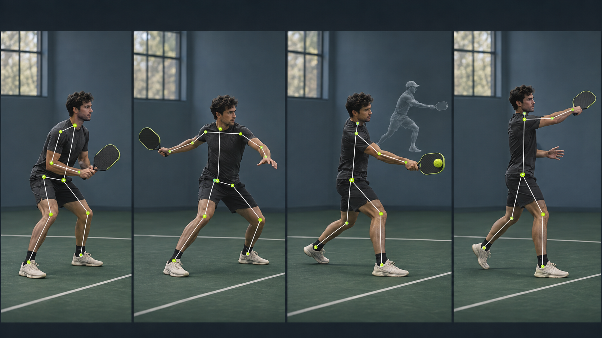

VIDEO REVIEW ANALYSIS READY
Baseline forehand / Clip 01

Pose model · 17 joints
00:08.20 / 00:14.00
Uploaded Oct 14 Side view · 60 fps
BIOMECHANICS LIVE MODEL
What the body is doing
Contact distance38 cm+ 6 cm to target
Trunk rotation41°Within pro range
Elbow angle112°Watch: collapses late
Base width0.84mStable foundation
TECHNIQUE FINDINGS
Three moments worth your attention
COACH NOTES
Make it actionable